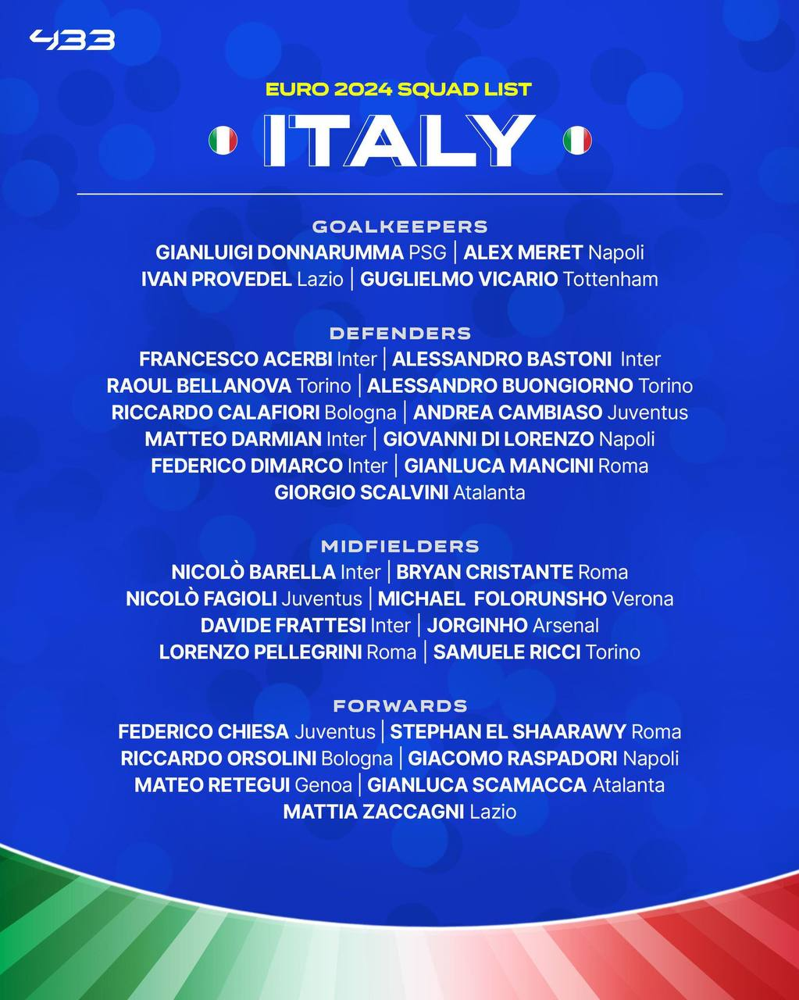
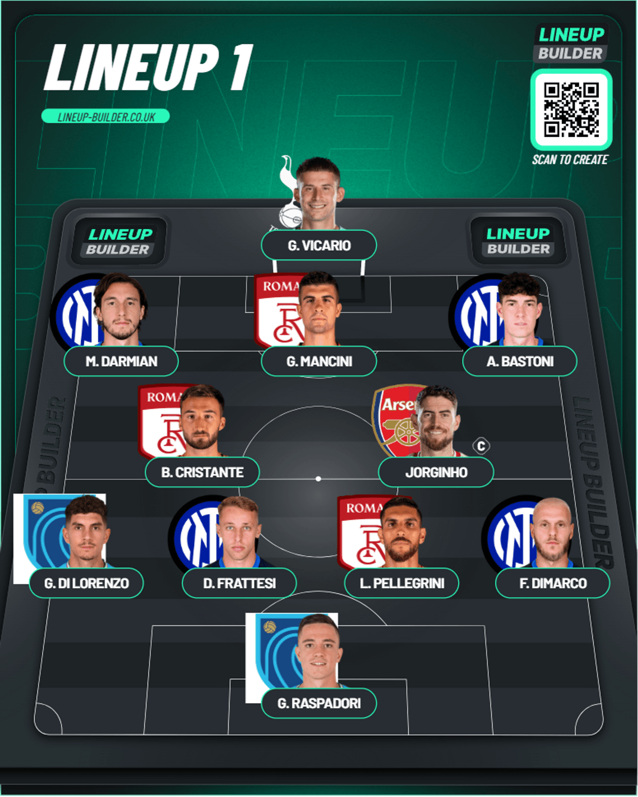
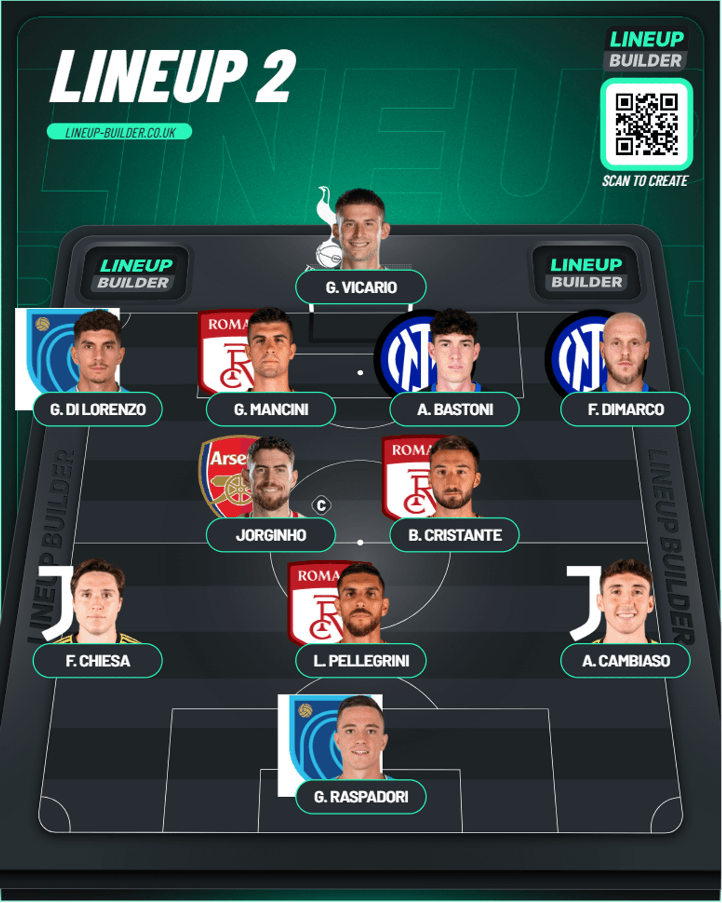

Italy Squad
Table of Contents
Italy Provisional Squad

The major news here is Scalvini will miss this tournament because of a major injury he just got recently
Alright. The defending champions of the Euros. It is hard to gauge them because they actually FAILED to qualify for the World Cup 2 years back but they’ve got some good players now and some good young talents as well. And as always you’ve got Fede Chiesa as well involved too. He was a live wire in the final against England from what I remember.
From what I’ve seen Spalletti plays a 3-4-2-1 with Italy. I wasn’t able to get this out properly but the wingers here are basically aggressive wing-backs. Alright. Let’s get into it.
Goalkeeper
This is a tough choice because usually Donnarumma is a shoo in but the stats don’t show him to be a good modern keeper which is why I get why the manager has started to trust Vicario and with good reason. Spurs just got 5th place this season(Could’ve done better if they actually cared about results for once) and he’s hit the ground running and become a solid Lloris successor. I don’t see any reason for him to continue. So I think he might get the nod
Defense
This will be a set of 3. With Inter just winning the Scudetto recently, I think Bastoni is a shoo in for sure. Darmian is another shout because I saw him in a recent lineup but I think Buongiorno has had a good season with Torino so he could play if height is required and Mancini is the final one mostly. Given they have a difficult group it’d be better to have the physicality here. Let’s see. I’m going with Bastoni, Mancini and Buongiorno. I think along with Buongiorno, Calafiori is another player to keep an eye on. He’s done well with Bologna so he could get a few minutes here too. Let’s see
Midfield
There will be 4 packed into this midfield. 2 sitting back and 2 working further forward. Barella is a sure option to control the midfield. I was thinking of linking him with Jorginho but he’s become a squad option for Arsenal in all honesty. Maybe Cristante seems to be a better option to have to hold the line with Barella. He’s started so many games for Roma in that CDM position so I think I’ll go with him. For the ones in front of them I’d go Pellegrini. He’s also done well with Roma so I don’t think you can go past him. For the second one you’ve got a lot of options. Raspadori is one as like a second ST. Zaccagni could be another option as he’s played there mostly for Lazio. Right now the problem seems to be is that since the manager plays wing backs there isn’t a place for Chiesa. Maybe as the second CAM. I don’t know. Let’s see how he plays it
Forward
This is a sole ST situation so the likes of Raspadori could be here upfront if not in CAM. Scamacca is another good target man option after he won the Europa League with Atalanta. I’d pick him for his height. Retegui is an option after a good season with Genoa. There’s also a forgotten name in El-Shaarawy who’s been rather decent with Roma so let’s see how they’ll defend their title
This is how I’d pick the team for the 2 formations
Lineup 1 (3-4-2-1)

Lineup 2 (4-2-3-1)

Cambiaso seems to have impressed in a recent friendly. Pellegrini however came off with an injury worry in that recent friendly so we’ll have to see how this would change
Players cut out
From the news we know so far, the following players have been cut by the manager:
* Ivan Provedel
* Riccardo Orsolini
* Samuele Ricci
* Francesco Acerbi
* Giorgio Scalvini